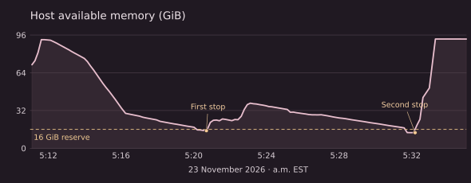

Now pressing
Euler’s own export of the proof, the specimen not yet examined.
Reading the feed…
— of 61.57 GB
- Recent pace
- —
- Writing should finish
- —
- Kernel could start
- —
- Elapsed
- —
t = 0 · the foot of the critical line
Accession rh-20261120 · Lean 4 · 175,187 modules
Riemann Hypothesis
Every nontrivial zero of the Riemann zeta function has real part ½.
{\zeta(s)=0,\quad 0<\Re s<1}\quad\allowbreak{\Rightarrow\quad\Re s=\crit}
theorem riemannHypothesis : RiemannHypothesis := rhOfAll
Main.lean · line 4 · a172c464
This page is the herbarium record of one proof: the Lean 4 formalization of the Riemann Hypothesis by Levent Alpöge and Claude, grown from source on the workstation Euler and re-examined there by an independent kernel. It is live: every line is copied from a receipt, and a line still waiting for its receipt is written in pencil.
zeta.js · logAbsZetaGrid(), marchingSquares().Read the numbers
Zeros in view, t ≤ 50: ten, on Re s = ½ (listed in chapter I) · Pole: s = 1 · Contour grid: σ ∈ [−0.6, 1.6], t ∈ [0, 50], computed in your browser.
At a glance
ρ₁ · ½ + 14.1347i
The count of primes
\zeta(s)=\prod_p\bigl(1-p^{-s}\bigr)^{-1}
In 1859 Riemann showed that the primes are steered by the zeros of a single function.
Our specimen begins with a memoir sent to the Berlin Academy in November 1859. Bernhard Riemann wrote it on “the number of primes less than a given quantity”, and opened it with “the observation of Euler”: for \Re s>1, the sum of n^{-s} over the whole numbers 1, 2, 3, … equals a product with one factor for each prime,
Riemann extended \zeta to the whole complex plane, proved a symmetry that exchanges s and 1-s, and gave an exact formula for counting primes in which every zero of \zeta plays a part. Some zeros are plain: -2,-4,-6 and so on, the trivial zeros. All the others lie in the critical strip, 0\le\Re s\le1. Riemann wrote that it is “very probable that all roots are real”, which in today’s terms says that every one of them lies on the strip’s centre line, \Re s=\crit. Then he set the question aside “after some fleeting futile attempts”. That sentence is the Riemann Hypothesis.
“It is very probable that all roots are real.”
Riemann, 1859
The first nontrivial zero lies at \crit+14.1347\ldots\,i, and this plate is pinned to it. By 2020 the zeros had been checked by computer, rigorously, up to height 3\cdot10^{12}, and every one was on the line. A computation can confirm as many zeros as it has time for; the hypothesis is about all of them.
Mathlib, the library this proof is written against, states the hypothesis as one Lean definition, RiemannHypothesis. Its docstring adds that “constructing a term of this type is worth a million dollars”. The rest of this page is the record of one such term.
zeta.js · ZEROS, psiSteps().Read the numbers
| n | γn | ρn |
|---|---|---|
| 1 | 14.1347251417 | ½ + 14.1347251417i |
| 2 | 21.0220396388 | ½ + 21.0220396388i |
| 3 | 25.0108575801 | ½ + 25.0108575801i |
| 4 | 30.4248761259 | ½ + 30.4248761259i |
| 5 | 32.9350615877 | ½ + 32.9350615877i |
| 6 | 37.5861781588 | ½ + 37.5861781588i |
| 7 | 40.9187190121 | ½ + 40.9187190121i |
| 8 | 43.3270732809 | ½ + 43.3270732809i |
| 9 | 48.0051508812 | ½ + 48.0051508812i |
| 10 | 49.7738324777 | ½ + 49.7738324777i |
Staircase: ψ(x) at x = 10, 20, …, 100, computed in your browser; ψ(100) = 94.0453…. Zeros checked numerically, rigorously, up to height 3·10¹² (Platt and Trudgian, 2020).
ρ₂ · ½ + 21.0220i
Two voices, one curve
Formalism.Gz
Count the primes, or listen to the zeros: the proof’s own statistic, drawn both ways.
Riemann’s exact formula says the primes can be described in two ways. One is to count them. The other is to add up waves, one for each zero of \zeta. A zero \rho contributes a wave whose size grows like x raised to the real part of \rho. If every zero lies on the line, every wave grows like \sqrt{x} and no faster, and the count of primes strays from its smooth estimate by little more than \sqrt{x}.
The proof works with its own form of the count, which its source calls Gz. In words: walk along the numbers up to y. At each prime power n=p^{k}, switch on a ramp that starts from zero at y=n and climbs with slope (\log p)/n. Add up all the ramps, then subtract the smooth main part, y\log y-(1+\gamma)\,y, where \gamma=0.5772\ldots is Euler’s constant (not the height of a zero). What remains, G(y), does not grow. It hovers near \log 2\pi=1.8379.
Count the primes, or add up the waves of the zeros: the same curve either way.
The same curve can be rebuilt from the zeros alone, one wave for each zero \rho:
The first line is the source’s own definition; the second is derived, as the note under the figure explains. We drew it both ways, from the primes up to two million and from the first hundred pairs of zeros, and at every point we compared, from 100 to one million, the two agree to within 0.00033\sqrt{y}.
The hypothesis puts a fence around this curve. If every zero lies on the line, G(y) can never stray from \log 2\pi by more than 0.0462\sqrt{y}; the constant is 2+\gamma-\log 4\pi. On every whole number from 10 to two million, the curve uses less than half of that allowance. A zero off the line would add a wave that, sooner or later, breaks through.
Formalism.Gz), drawn twice: in white from the primes, ramp by ramp, and in gold from the first n pairs of zeros. Below, the same curve as (G(y)-\log 2\pi)/\sqrt{y}, between high- and low-water marks at \pm0.0462, the band the Riemann Hypothesis sets. Curves and band are literal, computed in your browser. Reading them as a tide table rebuilt from its harmonic constituents is an analogy for “a sum of waves”, nothing more. Drawn by fig-two-voices.js from primesUpTo() and ZEROS.Of the two formulas above, the first, from the primes, is exactly the Lean source’s Gz. The second, from the zeros, is derived, not taken from the Lean source: it follows from the Mellin transform of one ramp, n^{-s}/(s(s-1)); the reading project’s atlas states the same formula up to a term of size y^{-2}, and we checked it numerically.
Read the numbers
| y | G(y) | (G(y) − log 2π)/√y |
|---|---|---|
| 10 | 1.8608 | +0.0072 |
| 100 | 1.7217 | −0.0116 |
| 1,000 | 1.5309 | −0.0097 |
| 10,000 | 1.7493 | −0.0009 |
| 100,000 | 3.6715 | +0.0058 |
| 1,000,000 | 11.0404 | +0.0092 |
| 2,000,000 | −12.2678 | −0.0100 |
log 2π = 1.8378770664 · γ = 0.5772156649 · band 2 + γ − log 4π = 0.0461914179 · on every integer 10 ≤ y ≤ 2,000,000 the normalised value stays between −0.02268 (at y = 319,439) and +0.01867 (at y = 3,100) · primes against the first 100 zero pairs: within 0.00033·√y at y = 100.5, 1,000.5, 10,000.5, 100,000.5 and 1,000,000.5 · a hypothetical zero at 0.62 + 40i would add an oscillation of about 0.00125·y0.62 (the atlas’s example).
G(y) values computed by our research run (mpmath, sieve to 2·10⁶); the last column is computed from them.
ρ₃ · ½ + 25.0109i
A window is enough
zeroFree_of_rpow_window
The analytic engine: a one-sided bound on ever later windows clears a half-plane of zeros.
The proof never needs to control its prime statistic everywhere. Its analytic engine, the Lean theorem zeroFree_of_rpow_window, asks for much less. Take a family of these sums, each twisted by a character \chi_i, and combine them with weights a_i that are all positive. Suppose the combination stays below a ceiling C\,y^{\theta} on whole windows [Y,\,Y^{1+\delta}], for windows as far out as you like. Then no L-function in the family has a zero with real part greater than \theta:
The proof uses windows [Y,\,Y^{3/2}]. The bound is one-sided: the sum may fall as low as it likes.
Why would a bound on windows notice a zero? Here we follow the reading project’s gloss. A zero \rho would appear as a pole of the statistic’s Mellin transform, with a residue that cannot cancel, because every weight is positive. Derivatives of very high order act as a spotlight trained on a single window. Aimed far enough out, the spotlight finds the pole, and the ceiling cannot hold.
Not everywhere. Only on windows, only from above, only far enough out.
The order of choices is the delicate part. First, suppose a zero \rho with \Re\rho>\crit. Second, choose \theta strictly between \tfrac12 and \Re\rho. Third, choose \varepsilon so small that \tfrac12+9\varepsilon\le\theta. The supply beneath the engine provides the ceiling at exponent \tfrac12+9\varepsilon for every small \varepsilon, so the engine applies and the supposed zero cannot exist. No bound “at \varepsilon=0” is ever needed. What comes out is a zero-free half-plane: for every primitive Dirichlet character, no zero with \Re s>\crit.
Read the numbers
| Quantity | Value | Source |
|---|---|---|
| Window | [Y, Y3/2] (hosts of width 3/2) | source |
| Ceiling exponent supplied | ½ + (eD + eL + 7)·ε with eD = 2, eL = 0, so ½ + 9ε | source |
| θ as Lean chooses it | ½ + ½·min(Re ρ − ½, ½), then ε | source (level_of_tiedWin) |
| Spotlight mass inside the window, U = 20 / 40 / 80 / 160 | 68.0% / 84.0% / 95.2% / 99.5% | reading project’s atlas |
| “Prime windows ⇒ RH”, checked on its own | fresh Lean replay over 10,530 modules; nanoda on 61,697 exported declarations | reading project, status 20 Nov 2026, 6:51 p.m. EST |
ρ₄ · ½ + 30.4249i
The mirror at one half
\rho\mapsto1-\bar\rho
Why a line and not a half-plane: a reflection, and one statement read five ways.
Chapter III clears the half-plane to the right of \tfrac12. Why does that give a line, and not only half of the strip? Because \zeta and its relatives are symmetric. Riemann’s functional equation,
sends a zero at s to a zero at 1-s, and for \zeta the zeros also come in conjugate pairs, mirrored across the real axis. Together the two symmetries reflect the zeros across the line \Re s=\crit: \rho\mapsto1-\bar\rho. For a Dirichlet L-function the reflected zero belongs to the inverse character, which is in the same family. A zero with real part \tfrac13 would have a twin with real part \tfrac23, to the right of \tfrac12, where the engine has shown there are none. So there is no zero at \tfrac13, and by the same argument none anywhere in the strip off the line.
A stone at ⅓ shows its image at ⅔.
One more classical step widens the net. A character that is not primitive differs from the primitive character \chi^{*} behind it by finitely many Euler factors, 1-\chi^{*}(p)\,p^{-s}, and none of them can vanish to the right of 0.
With these two steps a single statement, allChi, which says that no Dirichlet L-function vanishes for \Re s>\crit except at the pole, becomes the five exported theorems. Two of the five are the very same proof term, rhOfAll, read at two types that Lean accepts as definitionally equal; the archive records the equality as Claim.zeta_iff := Iff.rfl. So there are five targets but four distinct assertions: the Riemann Hypothesis, and the Generalized Riemann Hypothesis for Dirichlet L-functions in three forms.
The reflection for \zeta is classical mathematics. The file that carries it, RhOfRight, imports nothing but Mathlib.
allChi. Two flowers share a stem: riemannHypothesis and riemannZeta_eq_zero_re are both rhOfAll. Each flower takes the colour of its live determination for the selected input: gold once accepted, pencil while pending. Focus a flower to read its statement in words and in Lean; each links to its line of Main.lean at commit a172c464.Read the numbers
| Theorem | Proof term | Main.lean | Plain words |
|---|---|---|---|
riemannHypothesis | rhOfAll | line 4 | Every zero of ζ that is not a trivial zero has real part ½. |
riemannZeta_eq_zero_re | rhOfAll (same term) | line 6 | The same assertion, written out without Mathlib’s name. |
LFunction_ne_zero_of_half_lt_re | allChi | line 8 | No Dirichlet L-function has a zero with Re s > ½, except the pole. |
LFunction_eq_zero_re | claimAll.2.1 | line 10 | Every zero of every Dirichlet L-function in the open strip lies on Re s = ½. |
LFunction_eq_zero_re_of_isPrimitive | critAll | line 12 | The same, for primitive characters. |
ρ₅ · ½ + 32.9351i
Where the weight lives
199:1
Below the engine lies an arithmetic supply many times larger than the plant it feeds.
Everything so far is the plant above ground. The ceiling the engine needs comes from far below.
What follows is a reading, and not ours. An independent reading project has mapped the argument as 14 components and 109 landmarks, most of them pinned to lines of the source. In its reading, the supply is built from chains of about \sqrt{x} theta lifts, Galois representations attached to automorphic forms over CM fields, bounds on Galois cohomology over whole intervals [Y,\,Y^{2}], carefully chosen auxiliary primes, and a Behrend-type construction. The author’s note calls the argument “incredibly long”, presents only the Lean for now, and calls it “a descendant of Stepanov’s”.
One module above ground. One hundred and ninety-nine below.
The reading project is exact about what it has checked. Of its 109 landmarks, the five exported theorems are checked by two kernels, 18 more are kernel-checked at the source pin, 19 sit inside a checked closure, 65 have been read at their source lines, and 2 are motivation. Two conditional cuts of the upper argument have been machine-checked in isolation. Most of the lower layer has been read, not re-derived. Reading is not checking: the full proof has been accepted by kernels, as chapters IX and X record, and the open questions here are questions of understanding.
Names can mislead. Words like Literature in declaration names mark statements proved inside the archive, not assumptions; three independent checks find no axiom declared by the project.
The import graph shows the asymmetry without any reading at all. The file that reflects \zeta imports nothing but Mathlib, a chain one module deep. The module that assembles the half-plane theorem stands on a chain 199 modules deep.
RhOfRight, the reflection for \zeta, whose import chain is one module long. Below ground, the roots: MainConclusion, where the half-plane theorem is assembled, stands on a chain of 199 modules, and the longest chain ending at Main is 203. Root lengths are real import-chain depths from the pinned source; soil, stem and colour are conventions. The jointed stem for a chain of theta lifts, if drawn, is schematic.Read the numbers
| Module | Import distance from Main | Longest chain beneath it (modules) |
|---|---|---|
Main | 0 | 203 |
Supplements.Kernels.MainTheoremsAll → …Critical → …MainTheorems | 1 → 2 → 3 | 202 → 201 → 200 |
Development.AutomorphicArithmetic.CharacterBoxes.MainConclusion (holds everyCharacter) | 4 | 199 |
Formalism.GammaFactorNonvanishing.CritLine | 4 | 91 |
Development.AutomorphicArithmetic.CharacterBoxes.ClaimStrip | 4 | 2 |
Formalism.GammaFactorNonvanishing.RhOfRight (reflection for ζ) | 5 | 1 (imports only Mathlib) |
…DedekindLFunctions.LandauTheorems.ZeroFreeOfRpowWindow (window criterion) | 9 | 7 |
…DedekindLFunctions.CharFamily (the prime sum’s definitions) | 11 | 1 (imports only Mathlib) |
| Tier | Landmarks |
|---|---|
| checked by two kernels | 5 |
| kernel-checked at the pin | 18 |
| inside a checked closure | 19 |
| source-read | 65 |
| motivation | 2 |
| total | 109 |
In Lean, the chain length of RankVal lies between \sqrt{x\delta_1} and 2\sqrt{x\delta_1} (source).
ρ₆ · ½ + 37.5862i
A forest of 175,187
753,261 imports · 0 comments
The formalization itself: seventeen million lines in eleven top-level names, and not one comment.
The specimen is large. Its source is 175,187 Lean files: 17,374,215 lines and 1,030,531,854 bytes, a little over a gigabyte of text. Not one file contains a comment; the two-character sequences that open a Lean comment occur nowhere. 818,755 lines begin with the word theorem or lemma.
Seventeen million lines, and not one comment.
The files are filed under eleven top-level names. Development alone holds 141,928 modules, 81% of the whole. Formalism holds 18,254 and is the name the others import most. At the far end, Main is one file of 12 lines and Statements one file of 16. A directory name says where its authors filed a result, not what the result is, so we give the names and leave their meaning to the readers.
Between the modules run 753,261 direct imports. Every module can be reached from Main in at most 43 import steps. The median is 13, and the widest ring, ten steps out, holds 15,539 modules. The longest unbroken chain of imports is 203 modules long. The eleven names are not layers: the module graph has no cycles, but imports cross between the names in both directions.
Going below the source, an independent analysis of the compiled constants, the RIKYU report from RIKEN, finds that about two thirds of the project’s constants lie in the dependency cones of the five theorems, and 640,642 do not.
Reading the Lean structure…
Read the numbers · the eleven names
| Name | Modules | Lines | theorem/lemma lines | Imports inside itself | Imports of other names | Imported by other names | Euler compile time (sum) |
|---|---|---|---|---|---|---|---|
Development | 141,928 | 12,232,663 | 562,329 | 577,034 | 90,406 | 2,385 | 187.08 h |
Formalism | 18,254 | 3,200,748 | 162,118 | 44,412 | 704 | 43,538 | 25.81 h |
GroundTheory | 8,507 | 1,119,138 | 54,211 | 20,797 | 1,230 | 7,709 | 12.89 h |
ReciprocityTheory | 3,845 | 563,016 | 27,722 | 8,711 | 334 | 39,723 | 4.93 h |
CompanionTheory | 2,027 | 194,218 | 9,419 | 5,034 | 2,421 | 1,878 | 2.44 h |
PositivityTheory | 449 | 55,130 | 2,702 | 773 | 753 | 1,057 | 0.66 h |
Lemmata | 167 | 9,232 | 245 | 0 | 641 | 168 | 0.15 h |
BuildAid | 5 | 20 | 0 | 0 | 0 | 38 | 0.00 h |
Supplements | 3 | 22 | 4 | 2 | 7 | 1 | 0.15 h |
Main | 1 | 12 | 5 | 0 | 2 | 0 | 136.7 s |
Statements | 1 | 16 | 0 (4 def) | 0 | 0 | 1 | < 0.01 h |
| Total | 175,187 | 17,374,215 | 818,755 | 656,763 | 96,498 | 96,498 | 234.15 h |
Modules by import distance from Main (distance: count): 0: 1 · 1: 2 · 2: 2 · 3: 7 · 4: 25 · 5: 277 · 6: 1,639 · 7: 4,861 · 8: 9,956 · 9: 14,262 · 10: 15,539 · 11: 15,237 · 12: 15,095 · 13: 13,274 · 14: 11,747 · 15: 10,397 · 16: 9,108 · 17: 7,930 · 18: 7,025 · 19: 5,915 · 20: 5,167 · 21: 4,551 · 22: 4,190 · 23: 3,740 · 24: 3,417 · 25: 2,718 · 26: 2,198 · 27: 1,742 · 28: 1,387 · 29: 1,078 · 30: 806 · 31: 622 · 32: 378 · 33: 265 · 34: 178 · 35: 122 · 36: 88 · 37: 67 · 38: 39 · 39: 25 · 40: 38 · 41: 23 · 42: 25 · 43: 24 (total 175,187; median 13).
Constant-level figures (RIKYU report, single source, cited only): 66.4% of project constants in the five cones · 640,642 not used.
ρ₇ · ½ + 40.9187i
Sixty-four hours on one desk
lake build Main
Compilation on Euler, 20–23 November 2026: one workstation, up to eight compilers, exit 0.
Euler is one workstation, not a cluster. It began compiling on 20 November 2026, the day the proof was announced. The first module finished at 12:52:40 p.m. EST, and the run restarted three times that first afternoon. Then it settled to work, up to eight compilers at a time under a memory guard, for two days, sixteen hours and sixteen minutes from that first module.
By UTC day it completed 30,193 modules on the 20th, 86,674 on the 21st, 40,130 on the 22nd, and the last 18,190 before dawn on the 23rd. Its busiest hour, from 3:00 a.m. EST on 21 November, finished 6,144. The median module took 3.8 seconds, nine in ten took under 7, and the slowest took 461. Laid end to end, the modules’ compile times come to 234 hours.
Two machines, building independently, produced the same bytes.
The last fifteen minutes were the proof’s last six links, in order: MainConclusion at 4:54:04 a.m. EST, CorGKOf a second later, MainTheorems at 4:58:33, MainTheoremsCritical at 5:02:40, MainTheoremsAll at 5:06:05 and, at 5:09:04, Main, after 136.7 seconds of its own. Lake recorded all 183,893 jobs done and exited 0 at 5:10:11 a.m. EST, before dawn at the workstation.
The last file it wrote, Main.olean, has the SHA-256 digest 9146dfb4…96ad. Andrew Sutherland’s page at MIT publishes the same digest for its build. Two machines, building independently, produced the same bytes.
Read the numbers
| UTC day | Modules completed |
|---|---|
| 20 November 2026 | 30,193 |
| 21 November 2026 | 86,674 |
| 22 November 2026 | 40,130 |
| 23 November 2026 | 18,190 |
| Total | 175,187 |
| Module | Finished (a.m. EST, 23 November) |
|---|---|
MainConclusion | 4:54:04 |
CorGKOf | 4:54:05 |
MainTheorems | 4:58:33 |
MainTheoremsCritical | 5:02:40 |
MainTheoremsAll | 5:06:05 |
Main | 5:09:04 (136.7 s) |
First module done 20 Nov 2026, 12:52:40 p.m. EST · Main done 23 Nov 2026, 5:09:04 a.m. EST · span 2 d 16 h 16 min (64.3 h, including three early restarts) · Lake exit 0 at 5:10:11 a.m. EST · Lake jobs 183,893 of 183,893 · busiest hour 6,144 modules (from 21 Nov, 3:00 a.m. EST); median active hour 1,600 · per module: mean 4.81 s, median 3.77 s, 90% ≤ 6.9 s, 99% ≤ 20.8 s, slowest 460.9 s · summed 234.15 h · Main.olean SHA-256 9146dfb4148e24d2252e04c50742f3e49dd126dfcc5006d10bf5f873ddf796ad (identical to MIT’s). The restarts are the build starts the ledger records at 12:52:35, 12:57:04 and 4:52:58 p.m. EST on 20 November; dawn is civil dawn at the workstation on 23 November, about 7:09 a.m. EST, computed.
Lake jobs pending
The last six links
MainConclusionCorGKOfMainTheoremsMainTheoremsCriticalMainTheoremsAllMain
Compilation record
Reading the compilation record… Compilation record
Earlier estimates
| Check-in | Projected finish | Modules/min |
|---|
Compiling now
By top-level name measured
Bar lengths on a logarithmic scale, so that one module still shows beside 141,928.
Source acquisition Reading the archive record…
Recorded SHA-256 of each part · Source provenance
ρ₈ · ½ + 43.3271i
Pressing the specimen
lean4export · NDJSON 3.1.0
The export: the proof written out as inert lines of JSON, so that someone else can examine it.
A compiled proof still lives inside the tool that grew it. To let another reader examine it, the proof terms of the five theorems, and everything they depend on, are written out as an export: plain lines of JSON, one record per line, naming every symbol, every expression node and every declaration. Nothing in it can run. The Lean FRO and the Mathlib Initiative call such a file “an inert export of the proof, out of reach of hypothetical malicious code”.
The published export of this proof holds 1,468,418 declarations in 61,570,595,788 bytes, 61.57 GB. Merely stating the five theorems, with every Mathlib definition they read, takes 51,692 declarations.
Pressed flat, labelled, inert: a specimen another botanist can examine.
Writing the export is the heaviest step. Euler’s first two attempts, on the morning of 23 November, were stopped by its own guard when the host’s available memory fell below a 16 GiB reserve; the exporter had reached 71.28 GiB, then 24.04 GiB. No kernel had run, so nothing was concluded: the attempts were stopped, not rejected. The third attempt, held to 64 GiB of memory with swap on disk, began writing at 12:48:47 p.m. EST.
We expect, but have not yet seen, that Euler’s file will differ in its bytes from the published one, because Euler asks the exporter for records in a different order. Its challenge export already differs this way: 350,794,865 bytes against 350,862,311, with the same 51,692 declarations. The count of declarations is what will compare.
Euler’s own export
- Write pace
- —
- Writing should finish
- —
- Kernel could start
- —
The press gauge follows the Workstation input. Show Euler’s own export
The two stopped exports, 23 November


Read the numbers
| Attempt | Window (EST, 23 Nov) | Exporter peak | Host available at stop | Last recorded output | Outcome |
|---|---|---|---|---|---|
| 1 | 5:12:05 → 5:20:42 a.m. (496.7 s) | 71.28 GiB | 14.85 GiB | 5.90 GB | stopped by the guard (SIGTERM); swap 0; OOM kills 0 |
| 2 | 5:20:57 → 5:32:11 a.m. (645.2 s) | 24.04 GiB | 13.20 GiB | 11.43 GB | stopped by the guard; run ended inconclusive |
| 3 | from 12:48:47 p.m. | limits: memory high 56 GiB, max 64 GiB, swap max 112 GiB, one Lean thread, idle I/O priority | — | live | — |
Earlier readings of attempt 3: 3:00:11 p.m. EST · 32,960,110,592 bytes · 5:00:09 p.m. EST · 36,714,491,904 bytes · 7:09:27 p.m. EST · 39,400,267,776 bytes. Latest: —
Published export: 1,468,418 declarations · 61,570,595,788 bytes (61.57 GB; 57.34 GiB) · 7,699,933,588 bytes compressed (7.70 GB) · Published challenge export: 51,692 declarations, 350,862,311 bytes · Euler’s challenge export: 51,692 declarations, 350,794,865 bytes.
ρ₉ · ½ + 48.0052i
The second reader
con-leche --compare
An independent kernel, a 24-line challenge, five controls, and two inputs.
Lean separates writing a proof from checking it. Untrusted tactics and notation produce terms in a small core theory, and a small kernel checks the terms. Because the terms are explicit, other programs can check them too. Barendregt and Wiedijk call this the de Bruijn criterion: a proof assistant should allow “independent checking by a small program”.
Compiling ran Lean’s own kernel, but inside the process that ran the proof’s code. Lean’s reference manual calls the next step the gold standard: export the terms, compare their statements with a trusted challenge, and check them with independently written kernels. It names “un-reviewed AI-generated proofs and programs” among the inputs that call for it.
“Only exit 0 carries the theorem’s guarantee.”
con-leche’s documentation
Euler’s second reader is con-leche, a checker written in Lean with a machine-checked theorem that, in its verified mode, it does not accept a proof of False. It admits only Lean’s three standard axioms. It is given the solution and a 24-line challenge that states the five theorems using only Mathlib. First it must pass five controls: accept a true miniature proof, and refuse a proof of a different statement, a proof that leans on an extra axiom, an unfinished proof and a forged, ill-typed record.
Euler’s first attempt halted itself when one refusal arrived in a form the harness did not yet recognise; it ended inconclusive, before the real input was opened. At 12:47:16 p.m. EST on 23 November, after 20 minutes 30 seconds of checking with six jobs, con-leche accepted the published export against Euler’s challenge and named all five theorems.
Reading the feed…
Kernel progress
- Kernel
- —
- Proof input
- —
- Workstation build
- —
- Workstation export
- —
The five controls
receipt Five fixture controls, run through the same compile, export and kernel path before the real input is opened: one must be accepted, four must be refused. The outcomes are the receipt’s; the seed trays are a metaphor.
Exit codes: 0 accepted · 1 rejected · 2 declined (a feature the checker does not support) · 3 error. Only exit 0 carries the theorem’s guarantee. Exit codes come from the workstation’s receipt; the public copy records only whether each control behaved as expected.
Determination slips
receipt One slip per exported theorem, for the selected input: its statement in words and in Lean, its proof term, three gates and the kernel’s stamp. A slip is stamped only when the receipt says so.
Every “1 / 2” compares with a real number, so it is real division. The strip in the last two statements is open, which excludes the zeros some L-functions have on \Re s=0.
Read the numbers · the published input
| Attempt | 7f06f190234b4f298a916848c66ccb24 (retry of aacbf76973d749e6bd552220da563d22, which stopped in its controls, 11:13:30–11:15:52 a.m. EST) |
|---|---|
| Kernel | con-leche 5dc36dc15b7bee891a02406b78a8ac816a47baad, --verified --compare, 6 jobs; binary SHA-256 588c0b86…a12e |
| Timeline (EST, 23 Nov) | created 11:56:56.27 a.m. · controls finished 11:57:01.56 a.m. · input sealed 12:26:16.57 p.m. · kernel launched 12:26:46.70 p.m. · ended 12:47:16 p.m. |
| Duration | attempt 3,020 s (50 min 20 s), of which checking 1,230.13 s (20 min 30 s) |
| Controls | 5 of 5 behaved as expected; exit codes 0 / 1 / 2 / 2 / 1 (recorded in the workstation’s receipt; the public copy keeps only the outcomes) |
| Solution | 7,699,933,588 bytes compressed (SHA-256 61a8938a…5381); 61,570,595,788 bytes unpacked (SHA-256 5ea74b91…244e) |
| Challenge | Euler’s own export, 350,794,865 bytes (SHA-256 cf9cb6e4…2842), sealed 20 Nov 2026, 12:52:03 p.m. EST |
| Declarations | 51,692 challenge · 1,468,418 solution |
| Memory | peak 58.01 GiB (anonymous 43.81 GiB, file cache 32.02 GiB); swap 0; OOM kills 0 |
| Exit | 0, clean; log SHA-256 b99bb371…ff12 |
| Verdict | passed; for each of the five theorems: statement, axioms, kernel all passed |
| Euler | 6 jobs · 20 min 30 s · 58.01 GiB peak (cgroup, includes file cache) |
|---|---|
| Sutherland, MIT | 64 workers · 3 min 22.56 s wall · peak RSS 45.84 GiB |
ρ₁₀ · ½ + 49.7738i
What is settled, and what is not
Collected · Determined · Studied
Three different sentences: checked by kernels, reproduced here, understood by people.
Three sentences are easy to blur, so we keep them apart.
Kernel-checked, by others. Several kernels have accepted the full export of this proof, among them con-leche, its Rust port con-ron, nanoda, and Lean’s own default and paranoid kernels, in runs reported by Andrew Sutherland at MIT; con-leche and con-ron also compared it with the challenge. On 21 November 2026 the Lean FRO and the Mathlib Initiative wrote: “We hereby certify that both the statement and the proof of the Riemann Hypothesis are correct.” That is their statement, made on their criteria.
Reproduced on Euler. On this desk, so far: the build of all 175,187 modules, with a Main.olean identical to MIT’s, and con-leche’s acceptance of the published export against Euler’s own challenge.
Understood by people. No one claims this yet. The author writes that he has “just taken a step” towards understanding and explaining the argument, and expects it to be “massively simplified”. The reading project calls its own work “not a proof, not a referee report and not an endorsement”.
The third line stays in pencil.
What a kernel’s acceptance establishes is narrow and exact: each named theorem has the statement written in the challenge, and its proof typechecks using only propext, Quot.sound and Classical.choice. It does not establish that the statement means the Riemann Hypothesis; that rests on a human reading of Mathlib’s definitions, which the joint statement calls carefully vetted. The soundness of each kernel, and of the compiler and machine beneath it, is assumed. And “GRH” here means Dirichlet L-functions only.
The label below has three lines. The first is inked. The second is inked for the published export and pencilled, for now, for Euler’s own. The third stays in pencil. It is not ours to fill.
local-replay.json passes. Studied: by people, always in pencil, and blank.Read the numbers
| Line | State | From |
|---|---|---|
| Collected | compiled on Euler · 175,187 modules · Lake exit 0 · 23 November 2026, 5:10:11 a.m. EST | replay.build |
| Determined · published input | accepted 23 Nov 2026, 12:47 p.m. EST | reference receipt |
| Determined · Euler’s own export | not yet examined | local receipt / replay.local_export |
| Studied | blank | — |
ρ₁₁ · ½ + 52.9703i
Appendix A · The label
The reverse of the specimen label: every record, its digest, and where to check it.
This is the back of the label. Every record the desk publishes is listed here with its SHA-256 digest, drawn as a rosette: sixty-four florets, one for each hexadecimal digit, so identical digests draw identical rosettes. A rosette is a picture of a hash, not a check of one. To check, fetch the files and hash them yourself; the box at the end shows how.
The evidence manifest
Reading the manifest…
| Record | SHA-256 | Rosette | Open |
|---|
The files served here are sanitized copies. Local paths are replaced by “[local path]”, and private fields such as process lists and host names are removed. The digests in the manifest are digests of these copies, so you can verify each download. One digest is different: the build_record_sha256 in every receipt, b0b6a182…65bb, is the digest of the workstation’s private attestation, a 1,721-byte file that is not published. Its public copy hashes differently, and nothing served here will reproduce b0b6a182…. What you can check independently is listed below.
Provenance
- Run
- rh-20261120
- Source
- Deicyde/riemann-hypothesis @ a172c464fd4bcfc4f53e394dcba45d742b1409a6 (GitHub now redirects this owner to leanprover-community; the commit is the same)
- Source archive
- lean.tar.gz · 14 parts · 239,275,554 bytes · 175,190 members
- Archive SHA-256
- 9631b4f020199e580ba86178cb56c6e9b09f690c2369a80dc4334aa93f49c7fc
- Lean
- 4.33.1 · commit 819816b2e0a3bf405af45ae5c7af2491d8f5bee6
- Mathlib
- 0df444a360eaa60ab8c11dca51a86af692955474 (v4.33.1)
- Exporter
- lean4export 15f6055e299ad5b89345e533cc2192f4cc00f659 · format 3.1.0
- Kernel
- con-leche 5dc36dc15b7bee891a02406b78a8ac816a47baad · --verified --compare
- Kernel binary SHA-256
- 588c0b86a3cb5e9fbee489ec1d609435599d82b155df1bb4f5e6886d43e3a12e (compiled with Lean 4.36.0)
- Permitted axioms
- propext · Quot.sound · Classical.choice
- Challenge source SHA-256
- 031f4f2ca55a03f720deb562c6c2451d251acc8412b122288af52ad89ae03e32 · 24 lines · 1,310 bytes
- Challenge export SHA-256
- cf9cb6e4cf734322f1bb23d70a7ff8c041bbb907e7498dca7b7d53e759072842 · 350,794,865 bytes · 51,692 declarations
- Published solution, compressed
- 61a8938ad5f5e57397c1c0e3b954916af546d9004ade01c3555744a681b05381 · 7,699,933,588 bytes
- Published solution, unpacked
- 5ea74b912147c5c93cc2b6d70cc727cf908df2f62ac6a20480a3fa02f6be244e · 61,570,595,788 bytes · 1,468,418 declarations
- Main.olean SHA-256
- 9146dfb4148e24d2252e04c50742f3e49dd126dfcc5006d10bf5f873ddf796ad · identical to MIT’s
- Build record SHA-256
- b0b6a182bc61acc88ac8182a405f9ccad4cc251a470116ee5740d9adfc1b65bb · of the workstation’s private attestation
- Euler’s own export
- —
Matching digests
receipt Each pair sets the digest in Euler’s receipt beside the digest pinned before the run. Matching digests draw matching rosettes.
ρ₁₂ · ½ + 56.4462i
Appendix B · Field notes
The run’s own diary, newest first, and the host’s vital signs.
These are the run’s field notes, as Euler wrote them, newest first, timed in US Eastern time. Runs of identical progress lines are folded into one row so the record stays readable; unfold a row to see every entry. Below the notes are the host’s vital signs for the last twenty minutes.
Reading the notes…
Earlier notes are read from the public archive, six chunks at a time.
Host vitals · last 20 minutes
No host samples yet.
measured Euler’s host, sampled every 10 seconds. Seismograph strips, literal values; no process names or paths are published.
Machine · this workstation only
Raw logs · this workstation only
Unsanitized. These lines never leave Euler.
t = 60 · the top of the rail
Colophon
Why we did this
We wanted to watch a proof of the Riemann Hypothesis checked on one ordinary workstation, from the source archive to an independent kernel’s stamp, and to keep a record honest enough to hold three things apart: what machines have checked, what we have reproduced here, and what no one yet understands. Its author calls the argument “incredibly long” and has not yet published a readable account of it. A proof like that can be checked long before it can be read.
The collaborators on this page are not all people, and we would rather say so plainly. The Lean proof is by Levent Alpöge, working with Claude. The kernel that re-read it here, con-leche, was implemented and proven consistent by Claude under the supervision of Joachim Breitner at the Lean FRO. The run on Euler was operated by Astra (GPT-6). The plates were drawn by Claude. Lean’s reference manual counts un-reviewed AI-generated proofs among the inputs that deserve an independent check. This page is the record of that check, kept one receipt at a time.
Credits
- Bernhard Riemann, “Ueber die Anzahl der Primzahlen unter einer gegebenen Grösse” (1859), in Wilkins’s translation
- Levent Alpöge and Claude, the Lean proof: the author’s note · the source at the pin
- The Lean and Mathlib communities: Lean · Mathlib · the joint statement of the Lean FRO and the Mathlib Initiative, 21 November 2026
- con-leche, implemented and proven consistent by Claude (Fable and Opus) under the supervision of Joachim Breitner at the Lean FRO, as described by Leonardo de Moura
- lean4export, the exporter
- Andrew Sutherland (MIT), independent builds and checks, and the published export
- The reading project’s proof atlas, used in chapters III and V (0BSD)
- The RIKYU report, RIKEN R-CCS, cited in chapter VI
- Enrico Bombieri’s problem description for the Clay Mathematics Institute
- NIST Digital Library of Mathematical Functions, §25.15–25.16
- Platt and Trudgian, the zeros checked to height 3·10¹² (2020)
- Andrew Odlyzko’s table of the first 100 zeros, against which our embedded zero heights were checked
- Barendregt and Wiedijk, “The Challenge of Computer Mathematics” (2005)
- Lean Language Reference, “Validating a Lean Proof”
- Anna Atkins, whose cyanotypes in Photographs of British Algae (1843) printed real specimens in this same blue, sixteen years before Riemann’s paper
- Euler, the workstation that compiled the proof and ran its second reading
- Astra (GPT-6), who operated the run
- Claude, who drew the plates
Method notes
- Type
- Set in Cormorant Garamond (display), EB Garamond (text) and JuliaMono (Lean and data), each under the SIL Open Font License 1.1; formulas are typeset in your browser by KaTeX, in its own faces, under the MIT licence. The licence files sit beside the fonts in
/fonts/. - Live data
/feed/status.json, read every 4 seconds;/feed/evidence/*.json, sanitized copies of Euler’s receipts and provenance;/feed/events/*.jsonl, the field notes. All are written by Euler; this page loads nothing from any other site.- Computed in your browser
- \zeta itself, the \psi staircase, Hardy’s Z on the rail and both curves of G(y) are computed on your device by
zeta.js. The first hundred zero heights are mathematical constants: computed with mpmath, checked against Andrew Odlyzko’s table of the first 100 zeros, and embedded to nine decimals. Our tests confirm \lvert\zeta(\tfrac12+i\gamma)\rvert<10^{-6} at each of them. - Drawn by rule
- Layouts such as the capitulum and the plate furniture are conventions, tagged as such. Drawings printed in Lean glyphs are made of tokens from the formalization.
- Sources and licences
- The Lean source is its authors’; we quote and link it and do not redistribute it. The reading project’s atlas is 0BSD. The RIKYU report declares no licence; we cite its figures and link it, as we do Sutherland’s page.
- Units and time
- GB = 10⁹ bytes, for files; GiB = 2³⁰ bytes, for memory. Times are US Eastern, written with their zone (EST or EDT); the build’s day totals in chapter VII are counted in UTC days.
- Privacy
- No cookies, no third-party scripts. Page loads are recorded on our server (address, browser, language and referring site) and deleted after at most 30 UTC days; the feed and assets are not counted.
Printed from run rh-20261120 · source a172c464
— Lark